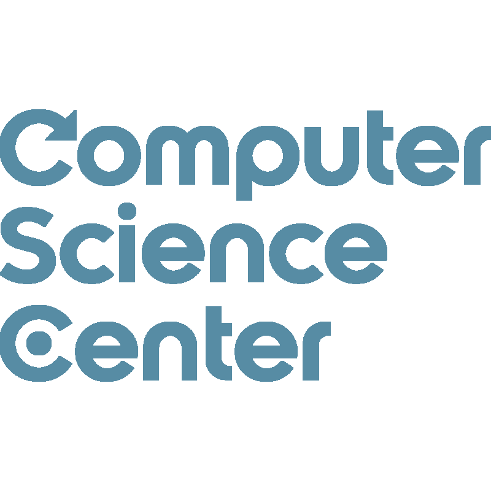
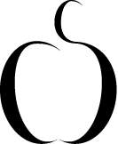
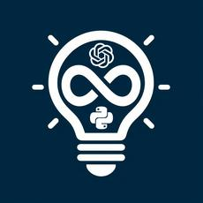
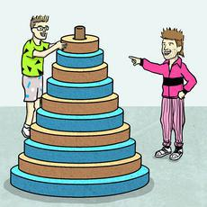
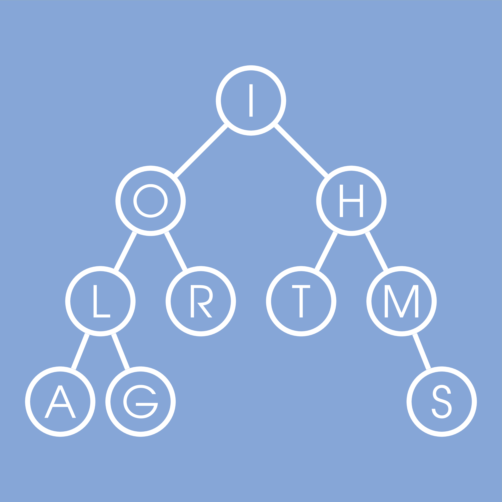
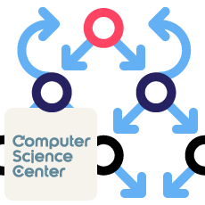
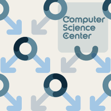
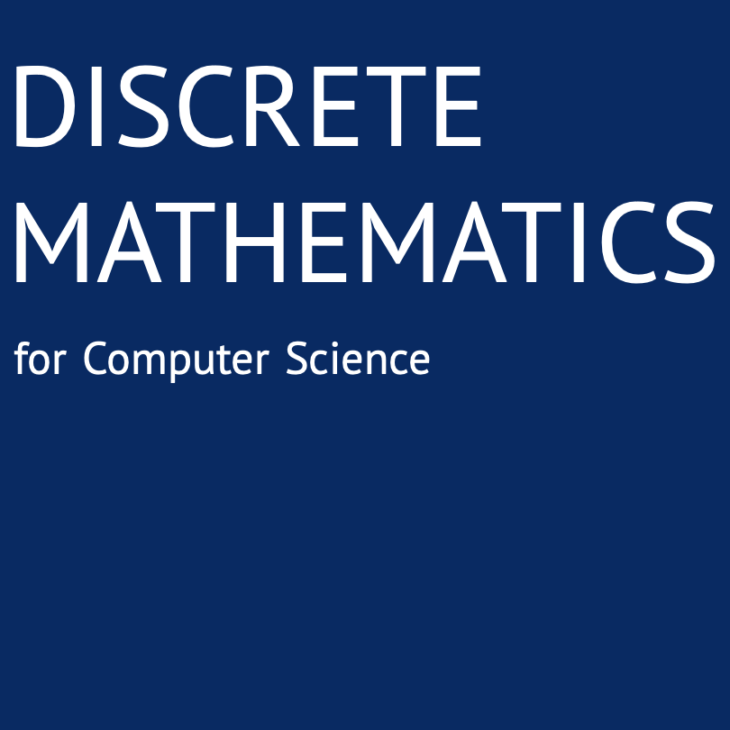
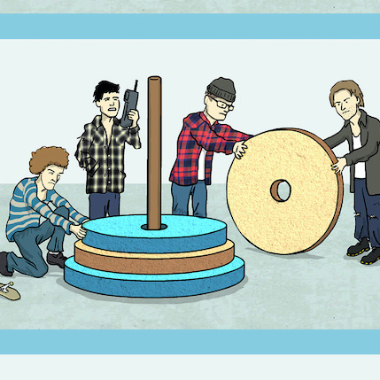
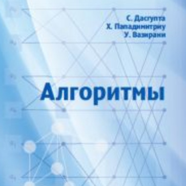

Alexander S. Kulikov
alexander.s.kulikov@gmail.com
Limassol, Cyprus
Current Positions
 | JetBrains, researcher |
Past Positions
| St. Petersburg Department of Steklov Institute of Mathematics, leading research fellow (on leave) | |
 | St. Petersburg State University, professor (2018–2022) |
|  | Computer Science Center, board member (2011–2022) |
|  | Computer Science Club, head (2007–2022) |
Research Interests
- Algorithms
- Computational complexity
- CS education
Education
| Dr.Sci.: 2017, St. Petersburg Department of Steklov Institute of Mathematics | |
| Ph.D.: 2009, St. Petersburg Department of Steklov Institute of Mathematics, supervisor: Edward A. Hirsch | |
| M.Sc.: 2005, St. Petersburg State University |
Publications
 | Google Scholar |
 | DBLP |
Committees
- Program committees: AAAI 2026, ECAI 2025, COCOON 2025, TACAS 2023, ICALP 2019, CSR 2018, CSR 2016, CPM 2014 (co-chair), CSR 2013, RECOMB-AB 2012
- Organizing committee chair: CSR 2022, ECCO-CO 2022, RAA 2018, RAA 2017, CSR 2016, SEA 2016, RECOMB-AB 2012, CSR 2011, SSCT 2009
- Steering committee: CSR
Online Courses (MOOCs)
The total number of enrolled learners is more than one million!|  | Proofs, ChatGPT, and Python, interactive book at Stepik, 2024 |
|  | Ace Your Next Coding Interview by Learning Algorithms Through Programming and Puzzle Solving, interactive book at Cogniterra, 2022 |
|  | Data Structures and Algorithms, six courses specialization at Coursera, 2015 |
| Introduction to Discrete Mathematics for Computer Science, five courses specialization at Coursera, 2017 | |
| Algorithms and Data Structures, eight courses MicroMasters program at edX, 2020 | |
|  | Algorithms: Theory and Practice. Toolbox, course at Stepic (in Russian), 2019 |
|  | Algorithms: Theory and Practice. Data Structures, course at Stepic (in Russian), 2014 |
Books
|  | Alexander Golovnev, Alexander S. Kulikov, Vladimir Podolskii, and Alexander Shen. Discrete Mathematics for Computer Science. 2020. |
|  | Alexander S. Kulikov, Pavel Pevzner. Learning Algorithms Through Programming and Puzzle Solving. 2018 |
|  | Translation into Russian: Sanjoy Dasgupta, Christos Papadimitriou, Umesh Vazirani. Algorithms. McGraw-Hill. 2006. Editor: Alexander Shen. Printed version: MCCME. 2014. Draft electronic version: PDF, PDF with hyperlinks |